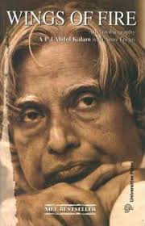
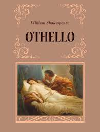
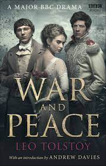

Half Girlfriend is an Indian English coming of age, young adult romance novel by Indian author Chetan Bhagat.[1] The novel, set in rural Bihar, New Delhi, Patna, and New York, is the story of a Bihari boy in quest of winning over the girl he loves.[2][3] This is Bhagat's sixth novel, which was released on 1 October 2014[4] by Rupa Publications
Secret
Rhonda Byrne
Author Rhonda Byrne, like each of us, has been on her own journey of discovery. In The Secret, she explains with simplicity the law that is governing all lives, and offers the knowledge of how to create – intentionally and effortlessly – a joyful life.
Now for the first time in history.
wings of fire

APJ Abdul Kalam
Wings of Fire (1999), is the autobiography of the Missile Man of India and President of India, Dr. A. P. J. Abdul Kalam. It was written by him and Arun Tiwari.[1]
In the autobiography, Kalam examineshis early life, effort, hardship, fortitude, luck and chance that eventually led him to lead Indian space research, nuclear and missile programs.
The Immortals of Meluha
Amish Tripathi
The Immortals of Meluha is the first book of Amish Tripathi, first book of Amishverse, and also the first book of Shiva Trilogy. The story is set in the land of Meluha and starts with the arrival of the Shiva. The Meluhans believe that Shiva is their fabled saviour Neelkanth.
Othello

William Shakespeare
thello (full title: The Tragedy of Othello, the Moor of Venice) is a tragedy written by William Shakespeare, probably in 1603. The story revolves around two characters, Othello and Iago.
War and Peace

Leo Tolstoy
War and Peace is a literary work by the Russian author Leo Tolstoy that mixes fictional narrative with chapters on history and philosophy. It was first published serially, then published in its entirety in 1869. It is regarded as Tolstoy's finest literary achievement and remains an internationally praised classic of world literature